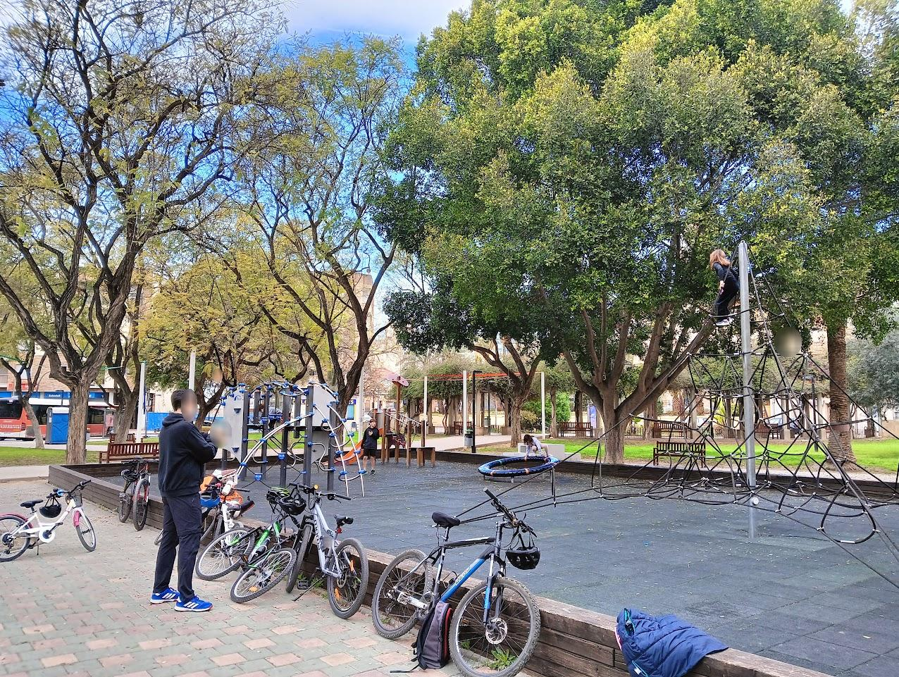

CEIP La Arboleda
Salida: 10:00Quedamos en la puerta del colegio La Arboleda para salir en grupo y repasar las normas básicas.
Fecha: domingo 25 de octubre de 2026 · Salida: 10:00 (CEIP La Arboleda, Murcia)
Distancia: 13 km | Duración aproximada: 2 h en movimiento (3,5 h en total)
Dificultad: Fácil | Ascenso total: 50m (con una breve subida a pie al cabezo)
Una ruta para pasear por los rincones de huerta que quedan en el norte de Murcia, entre Cabezo de Torres, Zarandona, Churra y El Puntal. Saldremos de la puerta del CEIP La Arboleda y disfrutaremos de la huerta de Zarandona y Churra. Haremos bici-gymkana y juegos en el parque de Cabezo de Torres, subiremos a lo alto del cabezo para ver la ciudad desde un balcón, pararemos a almorzar en la Ermita de Churra, pasaremos por El Puntal y llegaremos hasta Espinardo. Terminaremos en el Parque de la Mujer Trabajadora, junto al Bar Aurora, con el aperitivo.
Track Garmin enlazado con vista previa del recorrido y perfil de la ruta.
Nota: la ruta exacta variará con respecto al track para evitar en lo posible las vías con tráfico.
Quedamos en la puerta del colegio La Arboleda para salir en grupo y repasar las normas básicas.
Disfrutamos de la poca huerta que queda en Zarandona, con sus caballos, sus acequias y sus caminos.
Huerta en peligro. La huerta de Zarandona y Churra es de lo poco que queda de la huerta histórica de Murcia. Pedalear por ella es también una forma de reivindicar su protección frente al cemento y al abandono.
Parada con juegos para peques y mayores en el parque de Cabezo de Torres.

Haremos juegos de equilibrio y con la bici, carreras de quién llega el último, etc.
Subimos a lo alto del cabezo, un balcón con vistas a la ciudad y a la huerta.
Seguimos por la huerta de Churra y paramos en la Ermita de Churra para descansar y almorzar.
Paso por El Puntal, entre naranjos.
Llegamos a Espinardo, punto más lejano de la ruta.
Regresamos al Parque de la Mujer Trabajadora, junto al Bar Aurora, donde nos tomaremos el aperitivo y terminamos la ruta.
Track Garmin disponible. La ruta exacta variará con respecto al track para evitar en lo posible las vías con tráfico. Ruta fácil de unos 13 km, apta para peques; llevad casco, agua y almuerzo.